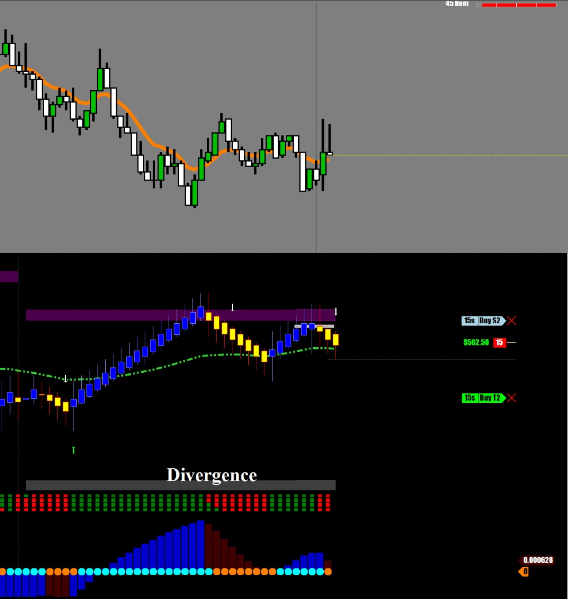
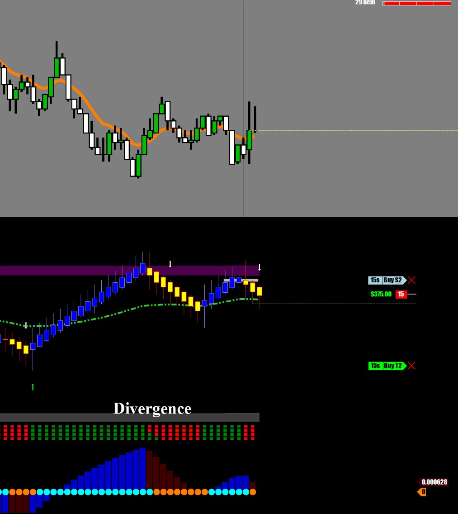
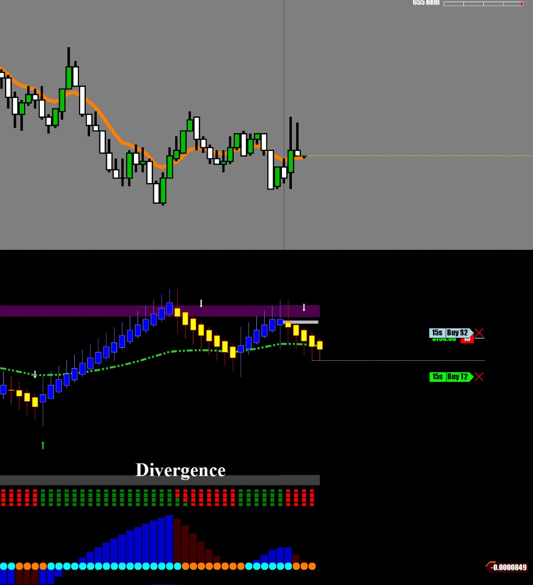
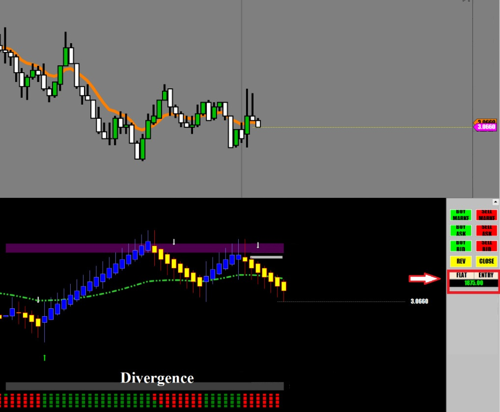

일요일 오후 3시 장외마켓 오픈
오늘은 구리로 시작
지금은 미국의 시리아 공습으로 크루드오일이 난장판이 나는 중이고,
언제나 그렇듯이 미친년 널뛰기 하시는듯한 선물인 크루드오일은 건드리고 싶지않은 상황.
대응이 어려운 상황에서는 어떤 선물이든지 Just stay away from it !!
모로 가도 서울만 가면 된다고,
어떤 선물을 매매하든지 수익만 나면 된다.
이왕이면 매매하기 쉬운걸로 가는게 맞다.
시리아 공습으로 세계경제에 부정적인 영향이 미칠것이 뻔하니 구리가격은 하락할것이 예상되므로 구리선물로 매매시작.
하락으로만 매매할 예정이다.
일단 기다렸다가 이평선 위에서 위로 긴 꼬리 두개를 만드는걸 보고 진입.
특히 두번째 캔들이 그 유명한 Pin Bar.
Pin Bar가 만들어진 지점이 오늘의 중요한 지지/저항선이다.
항상 강조하지만 캔들패턴은 만들어진 지점이 중요하다.
모든 패턴이 다 유효한게 아니라 중요한 지점에서 만들어진 캔들패턴만이 유효하다.



